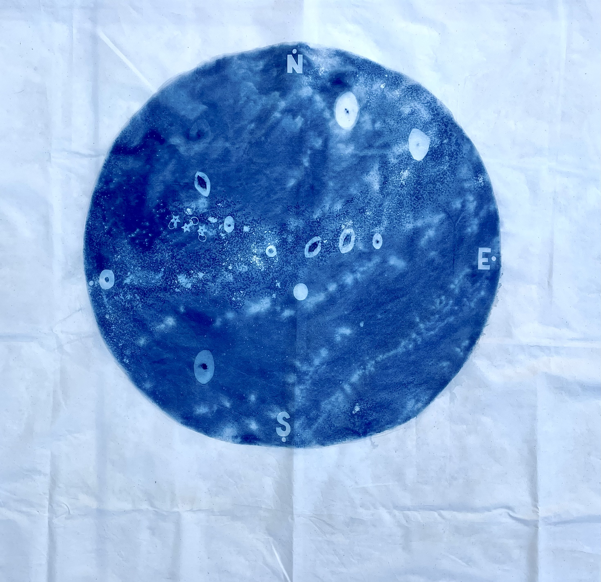

"Planisferio Celeste en Santiago" (2025)
Cianotipia sobre tela.
100x120cm
Obra investigativa sobre la posición de las estrellas.
Se registra este mapa personal mediante la cianotipia, usando objetos cotidianos como la representación de cada estrellas.Sin embargo, este registro se ve afectado por el contexto en el que se encuentra, es decir, la contaminación lumínica de Santiago.